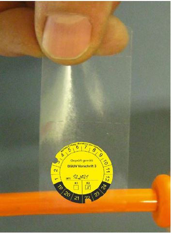

Elektrische Anlagen auf Bau- und Montagestellen, z. B. Beleuchtungsanlagen und Baustromanlagen, sind nach ihrer Errichtung (entsprechend den zutreffenden Teilen der Normenreihe VDE 0100) nach VDE 0100-600 zu prüfen.
Elektrische Anlagen und Betriebsmittel, von denen infolge eines Mangels eine Gefährdung ausgeht, müssen sofort wirksam der Benutzung entzogen werden.
Die Instandsetzung und Wartung von elektrischen Anlagen und Betriebsmitteln darf nur von Elektrofachkräften vorgenommen werden. Nach einer elektrotechnischen Instandsetzung muss eine abschließende Prüfung erfolgen.
Elektrische Anlagen und Betriebsmittel auf Bau- und Montagestellen müssen regelmäßig auf ordnungsgemäßen Zustand geprüft werden.
Hinweise zur Organisation, Auswahl des Prüfpersonals und Dokumentation der Prüfungen sind in DGUV Information 203-071 "Wiederkehrende Prüfungen elektrischer Anlagen und Betriebsmittel – Organisation durch den Unternehmer" enthalten.
Die Prüfung ortsveränderlicher elektrischer Betriebsmittel wird in DGUV Information 203-070 "Wiederkehrende Prüfungen ortsveränderlicher elektrischer Arbeitsmittel – Fachwissen für Prüfpersonen" beschrieben. Nach § 14 BetrSichV muss die Prüfung von einer zur Prüfung befähigten Person (siehe TRBS 1203) durchgeführt werden. Die Prüffristen sind vom Unternehmer im Rahmen der Gefährdungsbeurteilung zu ermitteln.
Die im Folgenden angegebenen Prüffristen gelten als in der Praxis bewährt und sind als Empfehlung zu betrachten.
Das Ergebnis der Prüfungen nach Abschnitt 7.1 Nr. 1., 2., 5. und 6. ist nach § 14 der BetrSichV zu dokumentieren.
Zusätzlich wird empfohlen, die geprüften und als mängelfrei beurteilten Betriebsmittel zu kennzeichnen, z. B. mit einer Prüfplakette oder Banderole.

Abb. 25 Beispiel für eine Prüfbanderole zur Befestigung an einer Leitung